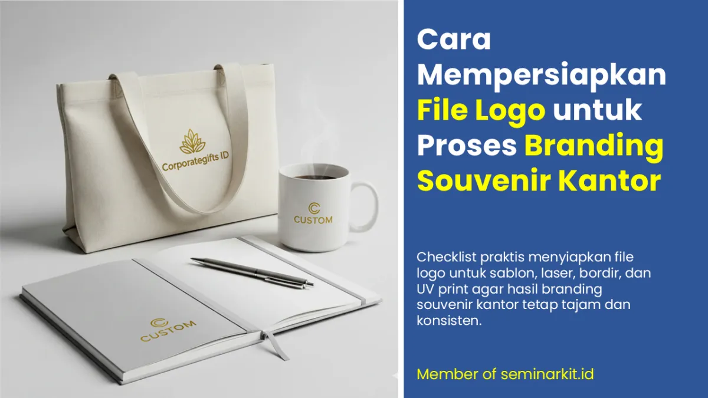
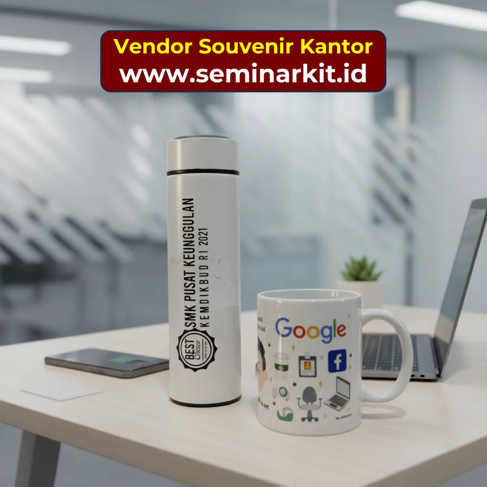

Satu file logo yang salah bisa memperlambat seluruh proses produksi souvenir kantor Anda. Anda mungkin sudah memilih produk yang tepat, teknik branding yang sesuai, dan vendor yang terpercaya - namun jika file logo yang dikirim tidak sesuai spesifikasi, hasilnya bisa mengecewakan: logo terlihat buram, warna tidak akurat, atau detail halus hilang.
Artikel ini adalah panduan praktis untuk tim purchasing, HR, atau marketing yang perlu mengirimkan file logo ke vendor souvenir kantor - tanpa harus menjadi ahli desain grafis.
Mengapa Persiapan File Logo Sangat Penting?
Setiap teknik branding memiliki "bahasa" tersendiri dalam membaca dan menggunakan file desain:
Sablon membutuhkan desain terpisah per lapisan warna
Laser engraving membutuhkan desain dalam satu warna kontras (hitam/putih)
Bordir membutuhkan file yang bisa dikonversi ke instruksi jahitan (digitizing)
UV print membutuhkan resolusi tinggi atau vektor untuk detail yang sempurna
File logo yang tidak disiapkan dengan benar akan memerlukan revisi oleh tim desain vendor - yang memakan waktu dan berpotensi menyebabkan keterlambatan produksi.
Format File yang Benar untuk Setiap Teknik Branding

Vektor vs Raster: Perbedaan yang Wajib Anda Pahami
File Vektor (.AI, .EPS, .SVG, .PDF)
File vektor menggunakan persamaan matematika untuk menggambar garis dan bentuk. Keunggulannya: bisa diperbesar atau diperkecil ke ukuran apapun tanpa kehilangan kualitas. Ini adalah format yang selalu dibutuhkan untuk sablon, laser, dan bordir.
Jika logo perusahaan Anda tidak memiliki file vektor, hubungi desainer yang membuat logo tersebut atau minta vendor souvenir untuk melakukan tracing (konversi dari raster ke vektor) - biasanya ada biaya tambahan.
File Raster (.JPG, .PNG, .TIFF)
File raster terdiri dari piksel. Jika diperbesar, gambar akan menjadi buram (pixelated). Untuk branding souvenir, raster hanya dapat digunakan jika resolusinya cukup tinggi (minimum 300 DPI pada ukuran cetak aktual).
Cara cek: buka file di software apapun, zoom in hingga 300-400%. Jika terlihat kotak-kotak/buram, file tidak layak untuk cetak. Jika masih tajam, mungkin resolusinya cukup untuk UV print atau DTG.
Mode Warna: RGB, CMYK, atau Pantone?
Pantone (PMS): Standar emas untuk akurasi warna branding. Jika logo perusahaan Anda memiliki kode Pantone (contoh: Pantone 485 C untuk merah), selalu sertakan informasi ini ke vendor. Ini memastikan warna sablon, benang bordir, dan tinta UV print mendekati warna brand guideline Anda.
CMYK: Mode warna untuk cetak. Gunakan CMYK untuk UV print dan sablon full color. Pastikan file desain sudah diubah ke mode CMYK sebelum dikirim.
RGB: Mode warna untuk layar/monitor. Jangan kirim file RGB ke vendor - warna di layar dan warna cetak bisa sangat berbeda.
Rekomendasi: Selalu minta HRD atau marketing perusahaan Anda untuk menyediakan brand guideline yang mencantumkan kode Pantone logo. Ini investasi satu kali yang berguna untuk semua project souvenir dan branding di masa depan.
| Teknik Branding | Format Prioritas | Catatan Penting |
|---|---|---|
| Sablon | AI, EPS, PDF vektor | Pisahkan warna per layer, sertakan referensi Pantone bila ada |
| Laser Engraving | AI, EPS, SVG | Gunakan single color (hitam-putih), hindari gradasi |
| Bordir | AI, EPS (untuk digitizing) | Sederhanakan elemen kecil, cek keterbacaan teks minimum |
| UV Print | AI, EPS, PDF, PNG/TIFF 300 DPI | Pastikan resolusi tinggi pada ukuran cetak aktual |
Checklist File Logo Sebelum Dikirim ke Vendor

Tips Tambahan untuk Hasil Branding Optimal
Selalu minta mockup digital dari vendor setelah mengirim file - agar Anda bisa verifikasi posisi, ukuran, dan tampilan logo sebelum proses produksi dimulai
Jika logo Anda kompleks (banyak detail halus, banyak warna), diskusikan dengan vendor apakah ada elemen yang perlu disederhanakan untuk hasil branding terbaik
Untuk laser engraving, siapkan versi logo yang sudah dikonversi ke single color (hitam penuh) - ini mempercepat proses dan memastikan hasil laser yang bersih
Jika menggunakan bordir, minta vendor untuk mengirimkan foto strike off dari beberapa sudut - bordir terlihat berbeda tergantung pencahayaan
Simpan semua file yang sudah disetujui vendor dalam folder tersendiri - berguna untuk repeat order di masa depan tanpa perlu memulai dari awal

Banner promosi: klik gambar untuk langsung terhubung ke WhatsApp tim sales.
FAQ Seputar Topik Ini
Kenapa file vektor lebih direkomendasikan untuk branding souvenir?
Karena vektor tetap tajam di berbagai ukuran sehingga lebih aman untuk sablon, laser, bordir, maupun UV print.
Apakah file PNG selalu ditolak vendor?
Tidak selalu, tetapi PNG harus beresolusi tinggi dan lebih cocok untuk kebutuhan UV print tertentu, bukan semua teknik.
Apa risiko mengirim file RGB ke vendor cetak?
Warna hasil cetak bisa melenceng dari tampilan layar karena proses produksi umumnya menggunakan standar cetak CMYK/Pantone.
Apa saja cek terakhir sebelum file dikirim?
Pastikan format benar, font sudah outline, ukuran cetak jelas, warna sesuai guideline, dan tidak ada elemen terlalu kecil.